Meningkatnya nilai tambah dari sumberdaya lokal
Mengoptimalkan Potensi yang Dimiliki
Potensi yang sebelumnya dianggap sebagai bahan biasa atau bahkan tidak termanfaatkan kini mulai dilihat sebagai sumber nilai. Kelompok mengolah bahan lokal, termasuk hasil samping dan limbah, menjadi produk bernilai jual.
Melalui pendekatan ekonomi sirkuler, sumber daya yang sebelumnya terbuang dapat dimanfaatkan kembali untuk menciptakan nilai ekonomi. Hal ini membuka ruang bagi kelompok untuk terus berinovasi, menciptakan produk baru, dan memperluas peluang usaha.
Perubahan
From

Potensi lokal
belum termanfaatkan
To
Produk dan usaha
dengan nilai
tambah yang lebih tinggi